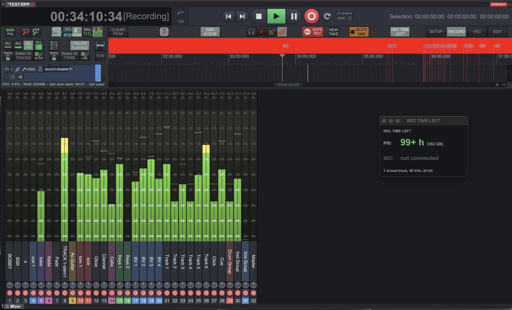
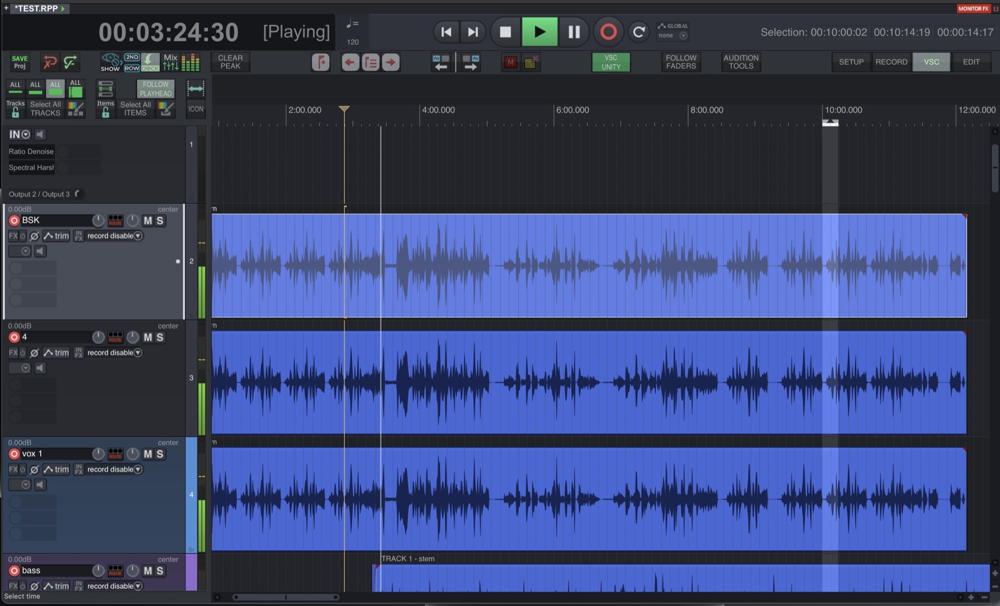
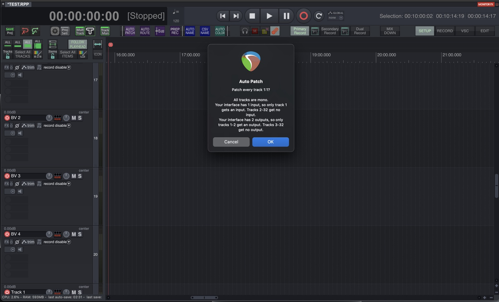
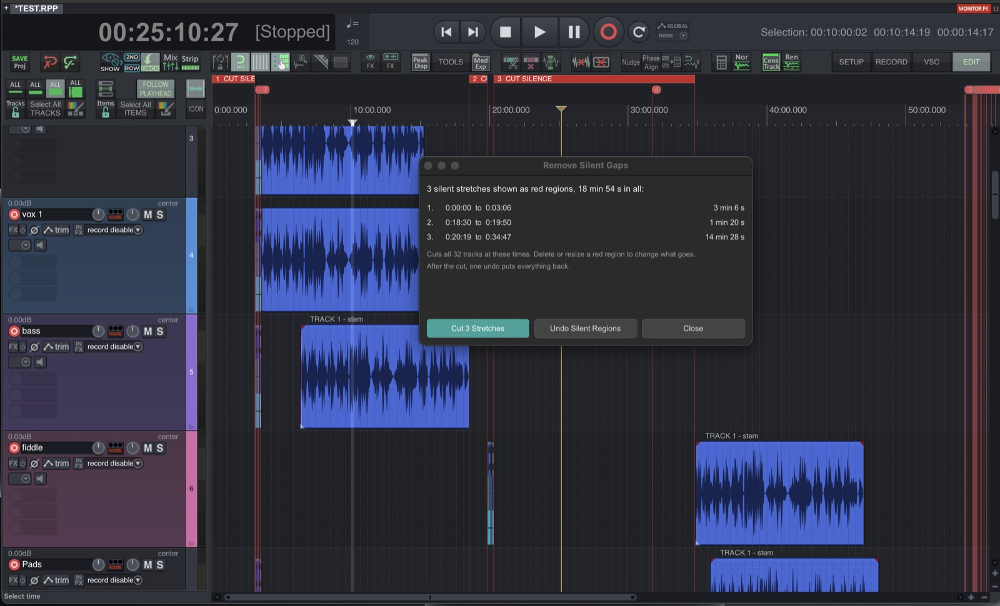
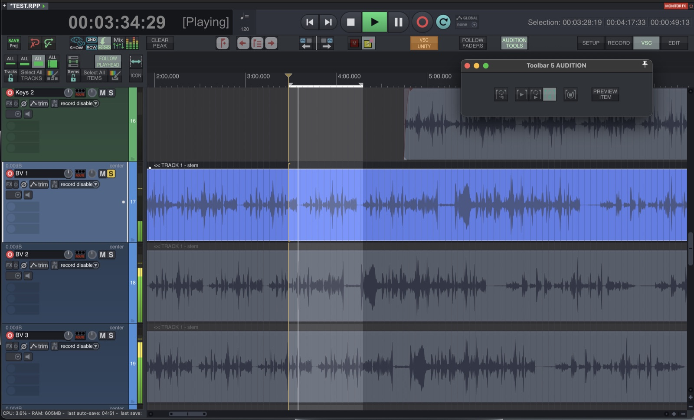
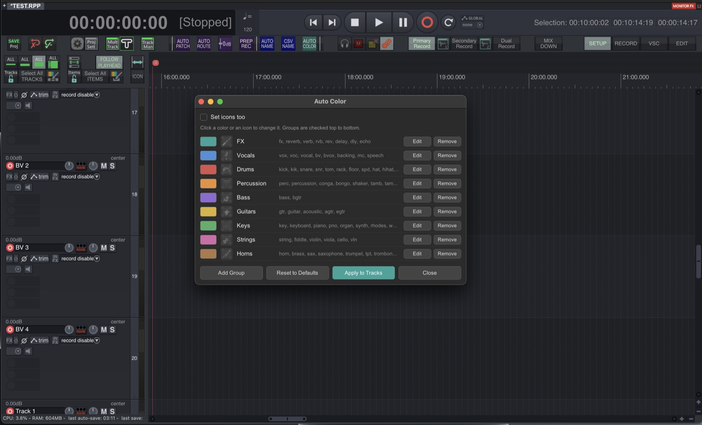
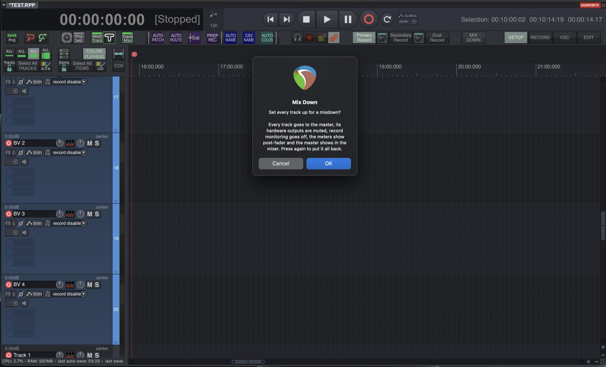
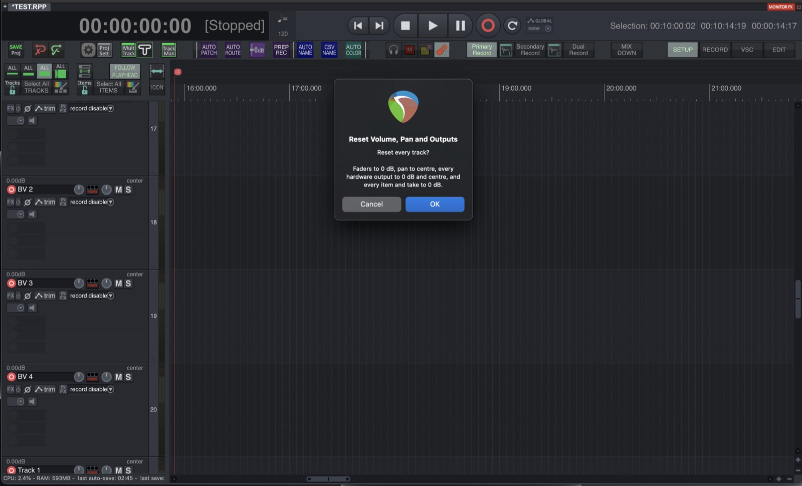

REAPER Live Recording and Virtual Soundcheck
A free REAPER setup for virtual soundcheck and live multitrack recording on a Mac. Every button is tuned for foolproof live records, not general mixing.
Complete Live Recording Setup
The whole BSK live recording system in one free download. Mac tested, untested on Windows. Some features like REC TIME LEFT may not work on Windows.
BSK REAPER Live Recording Setup ZIP
Project templates for 8 to 64 inputs and track templates for 8 to 128, patched 1:1. Four toolbar tabs, SETUP, RECORD, VSC and EDIT, each with the buttons for that job, and buttons that light to show what is on. Every script below plus SAFE REC, NEW TAKE, REC TIME LEFT, VSC UNITY and the rest, the bsk_flat dark theme, and meter bridge and mixer views. The Mac installer puts it all in place and backs up your toolbars and settings first. Needs REAPER 7.26 or newer and the free SWS Extension.
Download BSK REAPER Live Recording Setup (ZIP)Prefer to keep it separate from your main REAPER? The portable version has the same setup already wired into a portable REAPER folder - drop REAPER and the free SWS Extension in and run it, nothing merged into your existing install.
Download BSK REAPER Live Recording Portable (ZIP)Record
Safe record, and the time you have left
SAFE REC arms every track, turns monitoring off and records from the end, so a take never lands on old audio. It also stops and saves before a record drive fills. NEW TAKE starts a fresh take with a marker, and REC TIME LEFT shows how long each drive has left.

Virtual soundcheck
Virtual soundcheck you can trust
VSC UNITY stays lit while what goes back to the desk is exactly what came in, and goes dark the moment a level changes, or once there are recordings, a patch, mute or solo.

Patching
Mono and stereo patched 1:1
Set a track's input to stereo (any pair will do), press AUTO PATCH, and every track lands on its own inputs and outputs. It tells you which tracks your interface can't cover before it changes anything, and leaves those blank.

Editing
Cut the dead air out of a long multitrack
REMOVE SILENT GAPS finds the stretches where every track is silent, marks them as red regions, and cuts every track at once. One undo puts it all back.

Audition
Audition without wrecking the session
Loop a time selection or solo an item, then press the lit button again to stop, and the loop and solo go back how they were.

Colour
Colour tracks by name
Vocals, drums, bass, guitars and more, sorted by keyword, with icons if you want them. Edit the groups to suit your desk.

Mixdown
From VSC to a mix in one press
Every track goes to the master, hardware outs mute, monitoring goes off and the meters go post-fader. Press again to put it all back.

Reset
Back to unity in one press
Faders to 0 dB, pan to centre, and every hardware output, item and take back to 0 dB.

Plugin Host: Run a Live Insert Plugin
Included in both downloads above, not a separate download.
Plugin Host - 4 Mono + 2 Stereo Track Template
Six tracks (4 mono + 2 stereo) patched for a discrete insert send/return, record-disabled so they can never end up in a multitrack take, with a PLUGIN HOST toolbar to bypass all six at once and show or hide their FX. Use it for anything you need live in the signal path during a show, like feedback suppression or live tuning. Keep it as its own project, not part of a recording session.
Free REAPER Lua Scripts
The scripts that work on their own, outside the full setup. Download them here or install them with ReaPack below.
BSK AutoPatch: HW 1-to-1 Mono and Stereo Lua
Patches every track 1:1 to hardware inputs and outputs. Set a track's input to stereo first and it takes the next pair of inputs and outputs; the tracks after it move along. Tracks past what your interface has come out blank (no input or output), so nothing doubles up, and a stereo one comes back stereo on a bigger interface.
Download BSK_AutoPatch_HW_1to1_Mono_Stereo.luaBSK AutoPatch: HW 1-to-1 Mono Lua
The same, with every track mono: track 1 to input 1 and output 1, and so on.
Download BSK_AutoPatch_HW_1to1_Mono.luaBSK AutoRoute: HW Pre FX Lua
For every track that has a hardware output: outputs pre FX and pre fader, record monitoring off, master send off. Run it after AutoPatch for virtual soundcheck.
Download BSK_AutoRoute_HW_PreFX.luaBSK AutoPatch: HW Teardown Lua
Asks first, then removes every track's hardware inputs and outputs and turns master send and record monitoring back on. The opposite of AutoPatch.
Download BSK_AutoPatch_HW_Teardown.luaBSK Reset: Volume, Pan and Outputs Lua
Asks first, then sets every track's fader to 0 dB and pan to centre, every hardware output to 0 dB and centre, and every item and take to 0 dB. One undo. Needs the SWS Extension.
Download BSK_Reset_Volume_Pan_Outputs.luaBSK Import: Track Names from CSV or Text Lua
Names your tracks from a console offline editor export or a plain list. Detects the format automatically - works with Allen & Heath (dLive, Avantis, SQ), Yamaha (CL, QL, Rivage), or any plain text file with one name per line. Shows the names before it changes anything.
Download BSK_Import_Track_Names.luaBSK Auto-name: Tracks from Device Inputs Lua
Names each track from the input label your audio interface reports for its input. Shows the names first and applies them only after you confirm. Use the CSV import above if your interface does not pass channel labels through.
Download BSK_AutoName_From_Inputs.luaBSK Auto Color: Colour Tracks by Name Lua
Opens the Auto Color window: groups of words (vocals, drums, bass, guitars and more), each with a colour and an optional icon. Apply to Tracks colours every track whose name has one of a group's words. Edit, add or remove groups to suit your desk. One undo.
Download BSK_Colour_Tracks_By_Name.luaBSK Transport: Safe Rec Play Lua
Starts playback only if stopped or paused. Does nothing if already playing or recording. Designed to make your Stream Deck transport buttons safe.
Download BSK_Transport_Safe_Rec_Play.luaBSK Transport: Safe Rec Pause Lua
Pauses if playing, unpauses if paused (including paused recording). Does nothing if stopped or actively recording. Designed to make your Stream Deck transport buttons safe.
Download BSK_Transport_Safe_Rec_Pause.luaBSK Transport: Safe Rec Record Lua
Starts recording only if not already recording, then unselects every track so a fader or mute you touch mid-show moves only that track. Designed to make your Stream Deck transport buttons safe.
Download BSK_Transport_Safe_Rec_Record.luaHow to Install
Manual Install
Add scripts directly to REAPER from the downloaded files.
- Download the scripts using the links above.
- In REAPER, open the Actions list:
Actions > Show action list - Click
ReaScript: Loadand browse to the downloaded.luafile. - Repeat for each script. They will appear in the Actions list ready to run.
- To assign a keyboard shortcut or toolbar button, right-click the action in the list.
Via ReaPack
Install and update scripts automatically using ReaPack. Requires ReaPack to be installed.
- In REAPER:
Extensions > ReaPack > Import a repository - Paste this URL:
https://raw.githubusercontent.com/BSKapps/BSK-Reaper-Scripts-/main/index.xml - Browse and install via
Extensions > ReaPack > Browse packages - Future updates will be flagged automatically when you sync.
Stream Deck via Companion
Assign scripts to Stream Deck buttons using Bitfocus Companion
Companion's REAPER module talks to REAPER over OSC.
- In REAPER, go to
Preferences > Control/OSC/weband add a device. Set Control surface mode to OSC and Mode to Configure device IP+local port. Set Device IP to the Companion machine's IP, Device port to9000and Local listen port to8000. - Install your scripts in REAPER as above, then open the Actions list and find each script.
- Right-click the action and choose
Copy selected action command ID- it will look like_RS3a4f.... Note this for each script. - In Companion, add a new connection using the REAPER module. Set Target IP to your REAPER machine, Target Port to
8000and Feedback Port to9000(the module's defaults). - Create a button, add the Custom Action action, and paste the action command ID.
- Repeat for each script and assign the buttons to your Stream Deck.